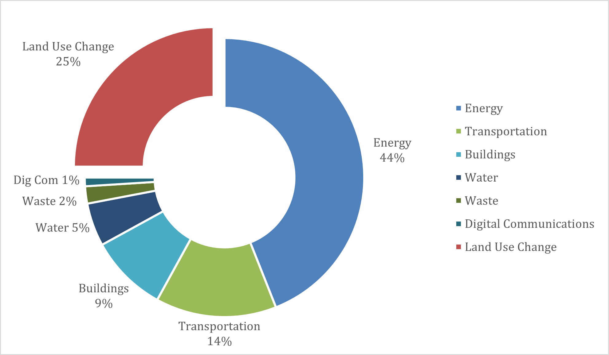
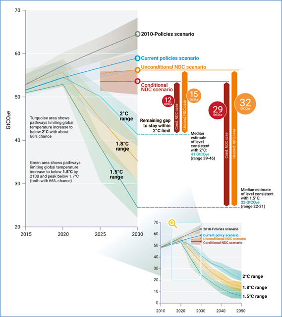

This mini-lecture outlines global infrastructure systems’ contribution to greenhouse gas emissions. It provides an overview of the emissions reduction commitments made through the Paris Agreement and subsequent Nationally Determined Contributions (NDC). Against this backdrop, the lecture highlights key reduction activities within critical infrastructure systems.
Based on the most recent data, global greenhouse gas emissions reached approximately 59.1 GtCO2e (gigatonnes of carbon dioxide equivalent) in 2019. Over the last decade, greenhouse gas emissions have grown annually at an average rate of 1.4% with no significant or sustained decline. Throughout 2020 and 2021, a decline has been observed due to the COVID-19 pandemic. However, unless COVID-19 recovery plans inculcate green strategies, emissions are expected to rise and continue rising in the aftermath of the pandemic. Our current emissions pathway is leading us to more than 3oC warming by the end of the century (United Nations 2020).
Being aware of emissions’ origin enables effective planning of emissions reduction measures. Global emissions originate from a variety of sectors. The major contributors over the past decade have been the energy, industry, transportation, and agricultural sectors. Within the energy infrastructure system, electricity and heat generation was the top emitter from 2010-2019, accounting for 24% of total greenhouse gas emissions. Together with the other infrastructure systems, such as transportation and buildings, the infrastructure sector produced more than half of global greenhouse gas emissions within this period.
The sector therefore stands as a crucial focal point for climate change mitigation efforts. Further, given the global presence of aging infrastructure, infrastructure systems offer us an ideal opportunity to alter our carbon intensive trajectory.
Taking a more in-depth look, the infrastructure system of systems generates approximately three quarters of global greenhouse gas emissions. In descending order of contribution, the energy, transportation, buildings, water, waste, and digital communication infrastructure systems produced approximately 75% of 2018 global emissions. The breakdown devised from a variety of data sources is detailed in Figure 2.1.1 below.

Figure 2.1.1: Global greenhouse gas emissions sector breakdown (Olivier and Peters 2020; Malmodin and Lundén 2018; Wakeel et al. 2016; Deemer et al. 2016)
As shown in Figure 2.1.1, each infrastructure system produces varying proportions of greenhouse gas emissions due to varying emission generating processes.
For instance, the energy sector generates 44% of global greenhouse gas emissions via coal, oil, and natural gas production and consumption (Olivier and Peters 2020). The transportation sector produces 14% of emissions through oil production and use (Olivier and Peters 2020). The building sector accounts for 9% of greenhouse gas emissions via cement production and energy consumption in commercial and residential buildings (Olivier and Peters 2020). The water sector’s 5% of global emissions originates from reservoir decomposition (Deemer et al. 2016) and energy consumed in the abstraction, treatment, and distribution of water and wastewater (Wakeel et al. 2016). Notably, emissions from organic decomposition in water bodies such as lakes and dams have been difficult to estimate and are uncertain. The waste sector contributes 2% of global emissions via decomposition from landfills (Olivier and Peters 2020). Lastly, the digital communication sector generates 1% of global greenhouse gas emissions via energy consumption in the lifecycle of Information and Communication Technology (Malmodin and Lundén 2018); energy is consumed in the manufacture and operation of user equipment, access networks, and service providers.
The Paris Agreement requires its signatories to commit to emissions reduction through non-binding Nationally Determined Contributions (NDCs). NDCs are a medium to communicate countries’ climate actions based on their national priorities and capabilities. Given that developed countries have historically contributed the majority of greenhouse gas emissions, they are expected to lead mitigation action and provide financial, technical, and capacity-building support to developing countries. All parties are to submit conditional or unconditional NDC commitments every five years, ideally with increased ambition.
Current NDC commitments for 2030 are not enough to meet the Paris Agreement of 2oC or 1.5oC goals (See Figure 2.1.2). There is a 12-19 GtCO2e and 29-36 GtCO2e emissions gap between global annual emissions and current NDC commitments for the 2oC and 1.5oC goals, respectively. These emission gaps translate to a projected temperature rise of at least 3oC by the end of the century (United Nations 2020).
Further, the developed countries that contribute 78% of global greenhouse gas emissions, are not in line to accomplish their current NDC commitments. Although many of these countries have recently made ambitious net-zero emissions pledges, these have not translated into action plans or updated NDCs (United Nations 2020).
Climate change mitigation action needs to be urgently ramped up if we are to meet the Paris Agreement’s targets. According to the 2020 UN Emissions Gap Report, countries direly need to develop and implement long-term strategies that are in line with the Paris Agreement. Countries need to simultaneously update their NDCs to reflect these plans and other related goals (United Nations 2020).

Figure 2.1.2: 2030 emissions gap based on current policies (United Nations 2020)
What actions can we take to bridge the emissions gap? Mitigation action involves the two broad areas of greenhouse gas emissions reduction and the enhancement of carbon sinks through nature-based solutions (see Lectures 15-18). The application of these two groups of initiatives can take a variety of forms within the infrastructure system. Some examples are shown in Table 2.1.1 below. Notably, nature-based solutions are particularly applicable to the water sector via ecosystem enhancement to safeguard water reserves.
Table 2.1.1: Possible grey and green infrastructure mitigation actions
| Greenhouse Gas Emissions Reduction with Grey and Green Infrastructure Actions | |
|---|---|
| Infrastructure Options | Nature-Based solutions (see Lectures 15-18) |
|
|
|
|
|
|
|
|
|
|
|
Some initiatives are considered to be low hanging fruit given their combined low cost and cross-sectoral sustainable development benefits. The report by IPCC (IPCC et al. 2018) highlights that mitigation action to reduce energy demand, decreased material consumption, and lower carbon-intensive food consumption have the highest potential sustainable development impact. Within those key areas, energy demand reduction sits most within infrastructure systems’ remit.
The COVID-19 pandemic and the economic challenges triggered may increase or decrease mitigation impetus. Ideally, COVID-19 recovery plans should be utilised to accelerate low-carbon growth. Fiscal rescue and recovery measures that maintain fossil fuel generation and other carbon intensive activities should not be supported. Rather, emissions reduction initiatives should be advanced through top-down measures to redesign infrastructure systems and bottom-up lifestyle changes.
The current picture of global emissions is bleak as greenhouse gas emissions continue to rise. Infrastructure systems are major contributors to global emissions and therefore should be one of the main targets for increased climate change mitigation action. Transitioning to low carbon infrastructure systems is a critical element of bridging the current emissions gap and achieving the Paris Agreement’s targets.